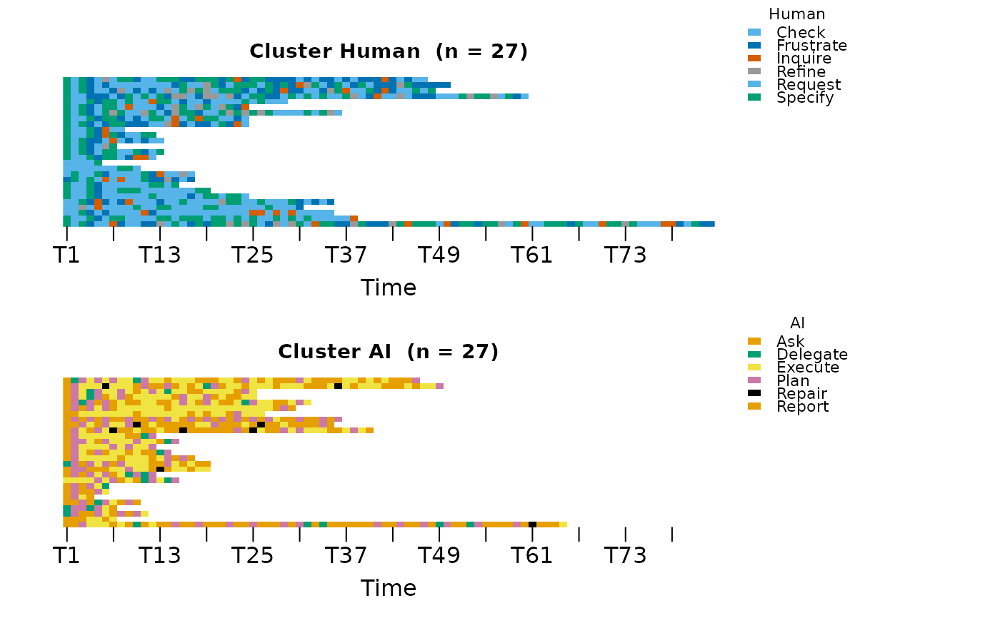
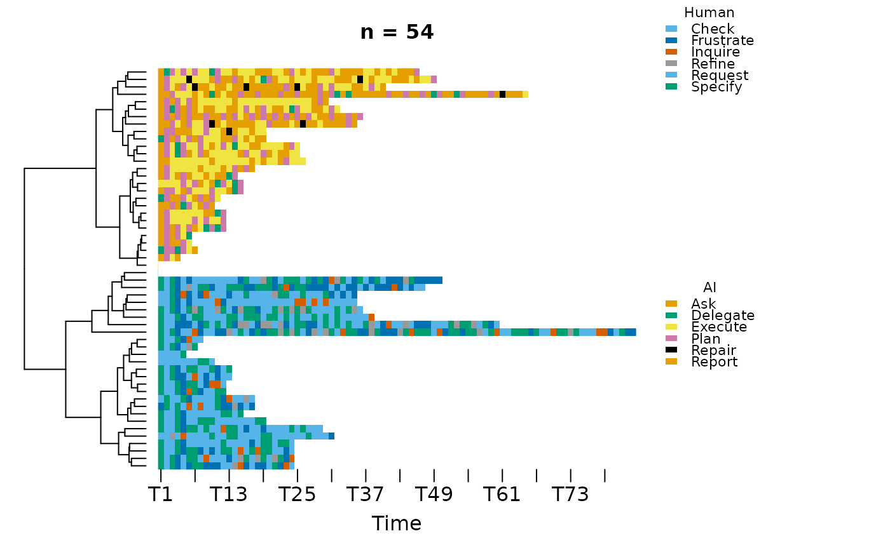
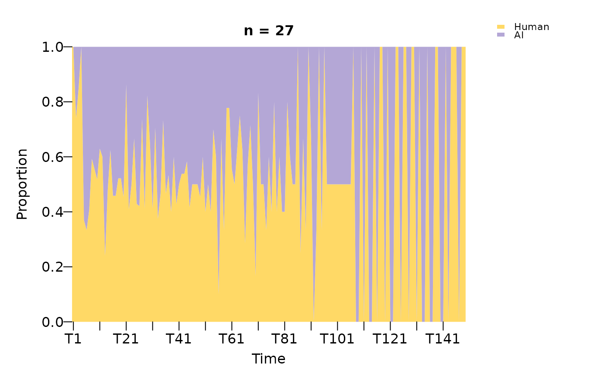

Plot the sessions of an htna network as sequences
Source:R/sequence_plot_htna.R
sequence_plot_htna.Rdsequence_plot_htna() plots the sessions of an htna network as
sequences: every session is a row of coloured cells, one per event, so
the reader sees how sessions begin and end, how long they run and
whether some codes cluster early or late. A transition network pools the
transitions of all sessions and so loses when each code occurs and how
long the sessions are; the sequence plot restores that view. In a
heterogeneous network the plot can separate the actor types, showing the
course of each actor's own events or which actor acted at each step.
The plot is drawn with Nestimate::sequence_plot(). With by = "state"
(the default) each cell is coloured by its code, and every session
contributes one row per actor type holding that actor's events in order;
the legend is split into one block per actor type. With
by = "group" the sessions are kept whole and each cell is coloured by
the actor type that acted at that step. type selects the display: a
sequence index plot with one panel per actor type ("index"), a single
carpet with a separator between the actor types ("heatmap"), or the
share of each code at every position ("distribution"). A grouped
network is drawn as one plot per cohort. plot_sequences() on an htna
network calls this function. It is called for the plot and returns,
invisibly, the description of the drawn plot (a list), or net for a
grouped network.
Rows are ordered by clustering the sessions, which can take some seconds
for several hundred sessions. For the network itself use plot_htna();
to test which sequence patterns differ between cohorts use
sequence_compare_htna().
Usage
sequence_plot_htna(
net,
by = c("state", "group"),
type = c("index", "heatmap", "distribution"),
grouped_legend = TRUE,
...
)
# S3 method for class 'htna'
plot_sequences(x, ...)Arguments
- net, x
An htna network from
build_htna(), or anhtna_group.- by
"state"(default) colours cells by code,"group"by actor type.- type
"index"(default),"heatmap"or"distribution".- grouped_legend
With
by = "state", split the legend into one block per actor type. DefaultTRUE.- ...
Further arguments of
Nestimate::sequence_plot(), such assort,legend,state_colorsormain.
Value
Called for the plot. Invisibly, the description of the drawn plot
returned by Nestimate::sequence_plot() (a list), or net for a
grouped network.
Conditions
htna_bad_input when net is not an htna network with sequence data;
htna_unassigned_node when it has no actor partition;
htna_empty_input for a grouped network without cohorts.
Examples
data(human_ai)
net <- build_htna(subset(human_ai, project == "Project_9"),
actor_type = "actor_type")
#> Metadata aggregated per session: ties resolved by first occurrence in 'cluster' (2 sessions)
sequence_plot_htna(net)

sequence_plot_htna(net, type = "heatmap")

sequence_plot_htna(net, by = "group", type = "distribution")
